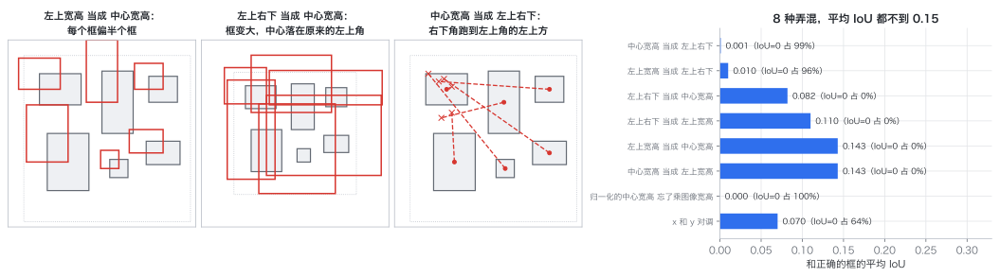
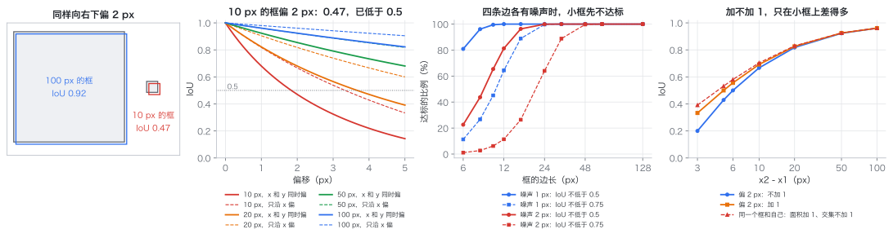
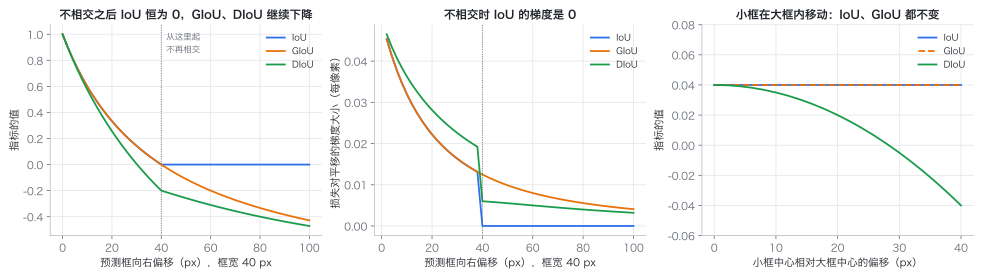
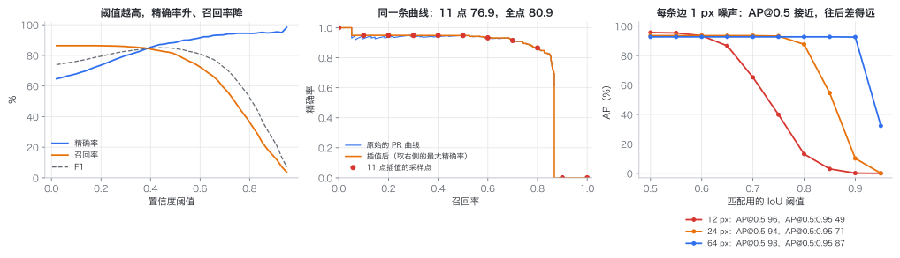
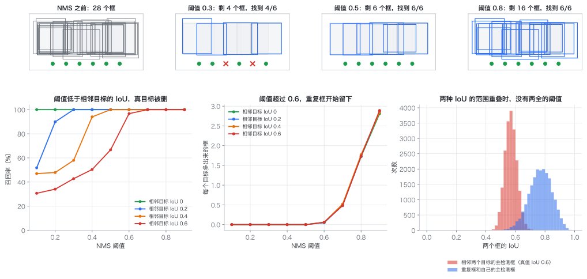
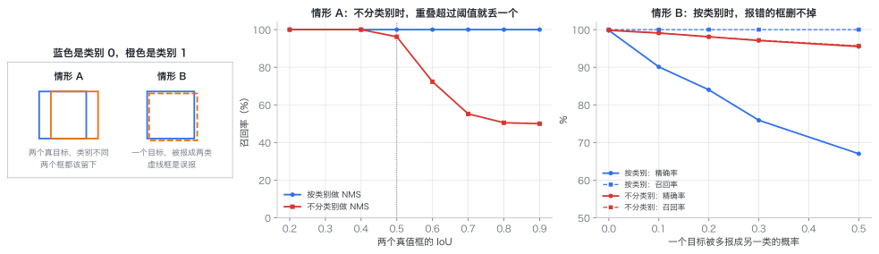

本章所有数字都来自实测或脚本计算，记录在 figures/实测数字.json，由 solutions 分支的 solutions/figures/ch11.py 生成。IoU 和 NMS 一律调用本章作业的参考实现，GIoU、DIoU 和 RoI Align 的对照用 torchvision 0.29.2。本机没有检测模型，也没有 COCO，所以“检测器的输出”是模拟出来的：在真值框上加定位噪声得到主检测，再加重复框和位置随机的假框。换成真实检测器和真实数据，数值会变，结论的方向要自己再测一遍。
配套练习：
DL-7 YOLO 自定义检测|DL-8 手写 IoU + NMS前置知识：第 8 天的损失函数与反向传播、第 9 天的 CNN 与感受野、第 10 天的迁移学习和数据增强。
（原文写的是“第 9 天的 CNN 与特征金字塔直觉”。第 9 章没有讲特征金字塔，FPN 在本章 11.2 节第一次出现，第 9 章能提供的是 9.4 节的感受野。）
自动验收的作业是 作业_批量IoU与类别NMS.py，它就是 DL-8 的批量版本。DL-7 和 DL-8 的原始题目在 视觉算法学习计划.md 第二部分“第 4 天：目标检测”一节，DL-7 需要自己准备照片和标注，在自己的机器上完成。
0. 本章怎么学
应用场景：有标注时定位并分类缺陷。产线上已经积累了带框标注的缺陷图（颗粒、划痕、缺失之类），希望模型直接输出“哪里有缺陷、是哪一类”，用的就是这一章的方法。工业缺陷往往只有十几个像素，本章花了不少篇幅量化“小目标”上的 IoU 和 AP 有多脆弱。
优先级：P3，已有基础或用得少。前置是第 9 章（卷积、感受野）。半导体检测里更常见的是第 18 章的比对法和第 19 章的异常检测，监督检测是它们之后的“第二步”（第 19 章第 7 节）。所以本章可以先走速通档，等真的要训练检测器时再升档。
| 档位 | 累计用时 | 做什么 | 做到什么算完 |
|---|---|---|---|
| 速通 | 3 小时 | 读 11.1、11.4、11.5、11.6 节，看懂图 1 到图 6，做 11.6 节末尾演示的 5 步，答完 5 道小测 | 能讲清坐标格式弄混的症状，为什么小目标的 IoU 对一两个像素这么敏感，同一份检测结果的 AP 为什么能报出不同的数，NMS 阈值和按类别做 NMS 各在什么情况下出错 |
| 标准 | 10 小时 | 读完全章，跑 Notebook，完成 作业_批量IoU与类别NMS.py 并验收通过，做 11.12 节前三个破坏实验，填实验记录 |
验收 5 项全部通过，实验记录的五个场景（完全重合、完全分离、边界接触、链式重叠、跨类别重合）都填了，自测问题都能答 |
| 深挖 | 12 小时 | 再做 11.12 节其余的破坏实验和 11.13 节的扩展（在自己的机器上跑一次 DL-7，或者自己实现 AP 并和图 4 对照） | 能对一份检测结果按第 11.5 节的格式报告：写清 IoU 阈值、插值方式、置信度截断和按尺寸分组的结果 |
用时超过所选档位的 1.5 倍还没做完，就把卡点写进 学习进度.md，先往下一章走。本章作业很短，时间主要花在 11.5 和 11.6 节。DL-7 要训练模型，第一次跑通环境可能比预想的久，它不在速通和标准档里。
11.1 检测比分类多做了什么
分类模型回答：“图里有没有猫？”目标检测还要回答：“有几只猫？每只在哪里？”因此一张图的标签不再是单个类别，而是一组目标：
[(class_id, x1, y1, x2, y2), ...]
(x1,y1) 是左上角，(x2,y2) 是右下角。也常用中心点形式 (cx,cy,w,h)。两者可互换：
cx=(x1+x2)/2, cy=(y1+y2)/2, w=x2-x1, h=y2-y1
检测的难点来自“输出数量不固定”。一张图可能没有目标，也可能有几十个；网络却只能输出固定形状张量。现代检测器通常先产生大量候选预测，再通过置信度阈值和 NMS 留下最终结果。
一个预测通常包含三类信息：
- 位置：框的中心和宽高，或到四条边的距离；
- 目标性 objectness：这里是否存在任意目标；
- 类别分数：如果有目标，它属于哪一类。
第 9 天的分类网络把空间特征压成一个向量；检测网络必须保留空间布局，因为“在哪里”正藏在特征图的位置中。
坐标格式弄混时是什么样子
常见的格式至少有三种：左上右下 (x1,y1,x2,y2)、中心宽高 (cx,cy,w,h)、左上宽高 (x,y,w,h)。YOLO 的标签文件用的是中心宽高，再除以图像的宽和高归一化到 0 到 1。不同的库、不同的标注工具各用一种，弄混是检测项目里最常见的错误之一。它不会报错，只会让指标莫名其妙地低。
下面在 640×640 的画面里随机放 5000 个框（宽和高各自在 8 到 200 px 之间），把同一组数字按另一种格式解释，再和正确的框算 IoU。

| 弄混的方式（5000 个随机框，640×640） | 平均 IoU | IoU 为 0 的比例 | 其他症状 |
|---|---|---|---|
| 中心宽高 当成 左上右下 | 0.001 | 99.1% | 99.1% 的框“右下角”在“左上角”的左边或上边 |
| 左上宽高 当成 左上右下 | 0.01 | 96.1% | 96.1% 的框右下角不在左上角右下方 |
| 左上右下 当成 中心宽高 | 0.082 | 0% | 71.3% 的框超出画面 |
| 左上右下 当成 左上宽高 | 0.11 | 0% | 74.5% 的框超出画面 |
| 左上宽高 当成 中心宽高 | 0.143 | 0% | 每个框的 IoU 都是 0.143，19.5% 超出画面 |
| 中心宽高 当成 左上宽高 | 0.143 | 0% | 同上 |
| 归一化的中心宽高 忘了乘图像宽高 | 0 | 100% | 所有框挤在画面左上角 1 px 以内 |
| x 和 y 对调 | 0.07 | 63.8% | 正方形、靠近对角线的框碰巧对得上，3.4% 的 IoU 不低于 0.5 |
几个可以直接用来诊断的规律：
- 左上宽高和中心宽高互相弄混时，IoU 恒等于 1/7（0.1429）。框只是平移了半个宽、半个高，交集是原面积的四分之一，并集是原面积的 7/4。不管框多大，结果都一样。看到所有预测的 IoU 都卡在 0.14 附近，基本可以断定是这一种。
- 把宽高当成右下角，绝大多数框变成“负宽度”。这类框的面积按
max(x2-x1, 0)算是 0，IoU 也是 0，训练时可能直接产生 NaN。拿到数据先检查x2 > x1和y2 > y1的比例。 - 把右下角当成宽高，框会变大并跑出画面。超出画面的比例从 0 一下子跳到七成，比看 IoU 更早暴露问题。
- x 和 y 对调最隐蔽。只要目标大致是正方形、又靠近对角线，IoU 可以很高（最大 0.946）。看平均数发现不了，要把框画到图上看。
11.8 节第 2 步“检查框与类别”说的就是这些情况。最有效的检查方法始终是把框画在图上。
(x, y, w, h)，读的时候当成了中心宽高 (cx, cy, w, h)。这批框和正确的框的 IoU 会是什么样子？B。实测 5000 个框的 IoU 最小值和最大值都是 0.143。这种弄混只是把每个框向左上平移了半个宽、半个高，交集是原面积的 1/4，并集是 7/4，比值和框的大小无关。全部是 0 的是另一种错误：归一化坐标忘了乘图像的宽高。
11.2 两阶段与一阶段：先找再认，还是一次完成
Faster R-CNN：两阶段
两阶段检测器把问题拆开：
图像 → Backbone 特征
→ RPN 产生候选区域
→ RoI Align 抽取每个区域的固定尺寸特征
→ 分类头 + 边框回归头
RPN 先问“哪些位置像目标”，第二阶段再精细分类和修框。这样通常定位精细、对小目标友好，但每个候选区域还要继续处理，速度和部署复杂度较高。
RoI Align 的关键不是名字，而是避免粗暴取整。候选框坐标映射到特征图后常是小数；RoI Pooling 取整会造成错位，RoI Align 用双线性插值采样，更适合需要精确边界的任务。
这里的错位有多大，可以用一张“斜坡”特征图量出来：步长 16 的特征图，每个格子的值就等于它的中心在原图上的 x 坐标。一个 32×32 px 的 RoI 每次右移 4 px，输出 1×1，理想的输出应该等于 RoI 中心的 x 坐标。
| RoI 右移（px），步长 16，torchvision 0.29.2 | 0 | 4 | 8 | 12 | 16 | 20 |
|---|---|---|---|---|---|---|
| RoI 的真实中心 x | 216 | 220 | 224 | 228 | 232 | 236 |
roi_align(..., aligned=True) |
216 | 220 | 224 | 228 | 232 | 236 |
roi_align(..., aligned=False) |
224 | 228 | 232 | 236 | 240 | 244 |
roi_pool（取区域内最大值） |
248 | 248 | 248 | 248 | 264 | 264 |
roi_pool的输出按 16 px 一档跳。RoI 右移 12 px 时输出没有变，再移 4 px 才跳一档，这就是取整造成的错位。- RoI Align 也要用对参数。
aligned=False时输出整体偏了 8 px，正好是半个格子：它没有把“像素中心在 0.5”这件事考虑进去。在 torchvision 0.29.2 里aligned的默认值是False。半个格子在步长 16 时是 8 px，对一个十几像素的缺陷来说已经是半个缺陷的尺寸。用别的框架时，先查清它的默认约定。
YOLO：一阶段
YOLO 把检测写成一次稠密预测：特征图上的许多位置同时预测框和类别。
图像 → Backbone → Neck（融合多尺度）→ Detection Head → 候选框 → NMS
- Backbone 提取纹理到语义的层级特征；
- Neck（如 FPN/PAN）融合高分辨率细节与低分辨率语义；
- Head 在多个尺度上输出位置、目标性和类别。
例如输入 640×640，大尺度特征图负责小目标，小尺度特征图负责大目标。这对应第 9 天的感受野：深层单元“看得广”但位置粗，浅层单元“看得细”但语义弱，FPN 让两者合作。
换成具体的数：640×640 的输入在步长 8、16、32 的三层特征图上分别是 80×80、40×40、20×20 个位置，合计 8400 个候选位置。一个 10 px 的缺陷在这三层上的边长分别只有 1.25、0.62、0.31 个格子。步长 32 那一层根本“装不下”它，小目标只能靠最浅的那一层。
“一阶段一定不准、两阶段一定慢”只是历史印象。今天二者边界已经模糊，实际选择应看数据、延迟、显存、部署后端和可维护性，而不是只看论文类别。
11.3 Anchor 到底在帮助什么
直接让网络从零猜任意宽高很难。Anchor-based 检测器先在每个位置放若干参考框，例如“细长、方形、扁宽”，网络只学习相对修正：
tx, ty：中心相对网格的偏移
tw, th：宽高相对 anchor 的缩放
一种常见参数化是：
bx = sigmoid(tx) + cx
by = sigmoid(ty) + cy
bw = aw * exp(tw)
bh = ah * exp(th)
其中 (cx,cy) 是网格位置，(aw,ah) 是 anchor 尺寸。指数保证宽高为正。训练时需要把真实框分配给合适的 anchor，这叫 label assignment。
Anchor 的代价是超参数多、正负样本分配复杂。Anchor-free 方法改为预测中心点、四边距离或关键点，减少手工设计。不要把“无 anchor”等同于“没有候选位置”：它仍在特征图位置上做稠密预测，只是不再依赖预设宽高。
自定义数据若目标形状很特殊，旧式 YOLO 可能需要重新聚类 anchor；新版本常有自动适配或 anchor-free 头，应先确认实现，别机械照搬旧教程。
label assignment 多半也是按 IoU 决定的：和真值框 IoU 够大的 anchor 才算正样本。下一节会看到，十几个像素的目标只要偏一两个像素，IoU 就掉得很厉害，所以小目标在分配阶段就容易“分不到”正样本。具体的分配规则各个版本不同，以所用实现的源码为准。
11.4 IoU：框重叠得有多好
交并比 Intersection over Union：
IoU(A,B) = area(A∩B) / area(A∪B)
范围为 [0,1]。完全不重叠是 0，完全相同是 1。计算步骤：
inter_x1 = max(ax1, bx1)
inter_y1 = max(ay1, by1)
inter_x2 = min(ax2, bx2)
inter_y2 = min(ay2, by2)
inter_w = max(0.0, inter_x2 - inter_x1)
inter_h = max(0.0, inter_y2 - inter_y1)
inter = inter_w * inter_h
union = area_a + area_b - inter
iou = inter / (union + 1e-7)
max(0,...) 不能省，否则不相交时会得到负面积。还要统一坐标约定：连续坐标通常不写 +1；某些旧式整数像素实现写 x2-x1+1，混用会产生隐蔽误差。
省掉 max(0,...) 的后果比“负面积”更糟：两个方向都不相交时，两个负数相乘得到正的交集。在 2000 对随机框里，有 24.6% 本来不相交、却算出了正的 IoU，最大的一个是 1340.156，远远超出 [0, 1]。
分母加 1e-7 的写法要小心。坐标是像素时，这一项的影响可以忽略：两个相同的 4 px 框算出的 IoU 只比 1 小 6.3e-09。但 YOLO 的标签是归一化到 0 到 1 的坐标，4096 宽的图像里一个 4 px 的框，归一化之后的面积只有 9.5e-07，和 1e-7 是同一个量级：
两个完全相同的框按 inter/(union+1e-7) 算（坐标归一化） |
2 px | 4 px | 8 px | 16 px |
|---|---|---|---|---|
| 图像宽 640 | 0.9899 | 0.9974 | 0.9994 | 0.9998 |
| 图像宽 4096 | 0.7045 | 0.9051 | 0.9745 | 0.9935 |
晶圆图、面板图常常有几千像素宽，同一个框和自己的 IoU 只有 0.9051，后面所有阈值判断都会偏。作业要求的做法是“并集大于 0 才相除，否则返回 0”，不加 eps，同样的 4 px 框在 float32 下也得到 1.0。验收脚本里有一项专门用归一化坐标下的小框来查这件事（边长 1/512，相当于 4096 宽图像里的 8 px，上表里是 0.9745），分母加固定 1e-7 的写法过不了。
IoU 既用于评价，也用于样本匹配和 NMS。但普通 IoU 在两框不相交时恒为 0，无法告诉优化器“应该往哪个方向移动”。因此回归损失常使用 GIoU、DIoU、CIoU：除重叠外，再考虑最小包围框、中心距离和宽高比。
一个逐步例子
真实框 G=(10,10,50,50)，预测框 P=(30,20,70,60)：
交集左上 = (30,20)，右下 = (50,50)
交集面积 = 20×30 = 600
G 面积 = 40×40 = 1600
P 面积 = 40×40 = 1600
并集 = 1600+1600-600 = 2600
IoU = 600/2600 ≈ 0.231
它们看起来有重叠，但若评价阈值是 0.5，这个预测仍算定位失败。（参考实现算出的也是 0.231。）
小目标：同样偏 2 个像素，IoU 掉得完全不一样
两个同样大小的正方形框，一个相对另一个平移，算 IoU（连续坐标，面积不加 1）：

| 框的边长 | 5 px | 10 px | 20 px | 50 px | 100 px | 200 px |
|---|---|---|---|---|---|---|
| 只沿 x 偏 1 px | 0.667 | 0.818 | 0.905 | 0.961 | 0.98 | 0.99 |
| 只沿 x 偏 2 px | 0.429 | 0.667 | 0.818 | 0.923 | 0.961 | 0.98 |
| x 和 y 同时偏 2 px | 0.22 | 0.471 | 0.681 | 0.855 | 0.924 | 0.961 |
| 位置不变，四条边各向外多 1 px | 0.51 | 0.694 | 0.826 | 0.925 | 0.961 | 0.98 |
- 同样偏 2 px，10 px 的框 IoU 掉了 0.333，100 px 的框只掉 0.039（只沿 x 偏）。x 和 y 同时偏时分别掉 0.529 和 0.076。只沿一个方向偏 \(d\) 时 IoU 是 \((s-d)/(s+d)\)，掉多少只由 \(d/s\) 决定，所以框小 10 倍，同样的像素误差就相当于大 10 倍的相对误差。
- 10 px 的框，向右下偏 2 px 就已经低于 0.5（0.471），按 IoU 0.5 匹配会被判成定位失败，同时记一次漏检、一次误报。100 px 的框要偏 18.35 px 才掉到 0.5。
- 框画大一圈也不行。中心完全对准、四条边各向外多画 1 px，10 px 的框 IoU 只有 0.694，5 px 的框只有 0.51。标注工具里手一抖就是这个量级。
换成更接近实际的情况：预测框四条边各自带独立的高斯噪声，每格 20000 次。
| 框的边长（px） | 6 | 8 | 10 | 12 | 16 | 24 | 32 |
|---|---|---|---|---|---|---|---|
| 噪声 1 px：IoU 不低于 0.5 的比例 | 80.9% | 96.1% | 99.5% | 100% | 100% | 100% | 100% |
| 噪声 1 px：IoU 不低于 0.75 的比例 | 11.3% | 26.7% | 45.1% | 64.4% | 88.9% | 99.7% | 100% |
| 噪声 2 px：IoU 不低于 0.5 的比例 | 22.6% | 43.7% | 65.4% | 81.3% | 96.3% | 99.9% | 100% |
| 噪声 2 px：IoU 不低于 0.75 的比例 | 1.1% | 2.7% | 6.2% | 11.4% | 26.4% | 64.0% | 88.8% |
同样是 1 px 的定位噪声，32 px 的框 100% 达到 0.75，10 px 的框只有 45.1%。另外，噪声 2 px、边长 16 px 这一格和噪声 1 px、边长 8 px 的平均 IoU 都是 0.684：IoU 只取决于“噪声除以边长”，图 2 右二的两组曲线在横轴上正好错开一倍。
这对工业检测的含义很直接：缺陷常常只有十几个像素，而标注和定位的误差是一两个像素，IoU 0.75 这样的门槛对它们几乎不可能达到。第 18 章 6.1 节用“匹配半径”讨论过同一个问题，11.5 节会把两者放在一起比较。
C。实测 0.471。0.92 是 100 px 的框同样偏 2 px 时的值（0.924），0.67 是 10 px 的框只沿一个方向偏 2 px 的值（0.667）。IoU 掉多少只由偏移和边长之比决定，10 px 的框偏 2 px 相当于 100 px 的框偏 20 px。
端点加不加 1
原文说“混用会产生隐蔽误差”。误差有多大，取决于框有多小：
| x2 - x1（px） | 3 | 5 | 10 | 20 | 50 | 100 |
|---|---|---|---|---|---|---|
| 沿 x 偏 2 px，不加 1 | 0.2 | 0.429 | 0.667 | 0.818 | 0.923 | 0.961 |
| 沿 x 偏 2 px，加 1 | 0.333 | 0.5 | 0.692 | 0.826 | 0.925 | 0.961 |
| 同一个框和自己：面积加 1、交集不加 1 | 0.391 | 0.532 | 0.704 | 0.83 | 0.925 | 0.961 |
| 只有一条边相接的两个框，加 1 | 0.1429 | 0.0909 | 0.0476 | 0.0244 | 0.0099 | 0.005 |
- 100 px 以上的框，两种约定没有差别；3 px 的框，同样的偏移一个算出 0.2，一个算出 0.333。
- 混用最伤。面积按加 1 算、交集却按不加 1 算时，同一个 10 px 的框和自己的 IoU 只有 0.704，3 px 的只有 0.391。反过来（交集加 1、面积不加 1），3 px 的框和自己的 IoU 是 8.0，超出了 [0, 1]。
- 加 1 时，边界相接也算重叠。不加 1 时只有一条边相接的两个框 IoU 是 0；加 1 时 3 px 的框是 0.1429，因为“共用的那一列像素”被算成了交集。作业用的是不加 1 的连续坐标，边界接触的 IoU 必须是 0。
- 在一批小框上，约定不同会让判定翻转。x2 - x1 在 6 到 16 px 之间、四条边各带 1.5 px 噪声并取整，按不加 1 算有 84.5% 达到 0.5，按加 1 算有 89.3%，4.7% 的框两种约定给出的判定相反。和别人对数时，先问清楚坐标是像素下标还是连续坐标。
GIoU、DIoU：不相交时还有没有方向
原文这一段说得对：IoU 在两框不相交时恒为 0，没有梯度。下面用两个 40×40 的框把它量出来，梯度是损失 \(1 - \text{指标}\) 对预测框整体沿 x 平移的导数。

| 预测框向右偏（px），框宽 40 | 10 | 20 | 30 | 40（刚好相接） | 50 | 80 |
|---|---|---|---|---|---|---|
| IoU | 0.6 | 0.333 | 0.143 | 0 | 0 | 0 |
| GIoU | 0.6 | 0.333 | 0.143 | 0 | -0.111 | -0.333 |
| DIoU | 0.576 | 0.256 | 0.004 | -0.2 | -0.258 | -0.4 |
| IoU 损失对平移的梯度 | 0.032 | 0.0222 | 0.0163 | 0 | 0 | 0 |
| GIoU 损失对平移的梯度 | 0.032 | 0.0222 | 0.0163 | 0.0125 | 0.0099 | 0.0056 |
GIoU 和 DIoU 在两框分开以后仍然继续下降，梯度不为 0，优化器知道该往哪边挪。
原文没有提到的一点：一个框完全落在另一个框里面时，GIoU 退化成 IoU。20×20 的预测框在 100×100 的真值框里左右移动，IoU 和 GIoU 都恒等于 0.04，平移的梯度都是 0。这时最小包围框就是大框本身，GIoU 额外的那一项等于 0。DIoU 惩罚中心距离，小框中心偏 20 px 时它从 0.04 降到 0.02，所以能把小框往中心推。预测框远小于真值框是训练初期的常见情况，这正是 DIoU、CIoU 被提出来的原因之一。
11.5 Precision、Recall、AP 与 mAP
先在某个 IoU 阈值下匹配预测与真实框：
- TP：类别正确，且与尚未匹配的真实框 IoU 达标；
- FP：背景误报、类别错、定位不达标，或同一目标被重复预测；
- FN：真实目标没有被检测到。
Precision = TP/(TP+FP) 预测出来的有多少是真的
Recall = TP/(TP+FN) 真实目标有多少被找到了
改变置信度阈值，会得到一条 Precision-Recall 曲线。AP 是该类别 PR 曲线下面积，mAP 是各类别 AP 的平均。
常见的 mAP@0.5 只要求 IoU≥0.5；mAP@0.5:0.95 在 0.50、0.55……0.95 十个阈值上求平均，更强调精确定位。报告结果必须写清口径，否则两个“mAP 80%”可能根本不可比。
类别不均衡时，mAP 给每类相同权重：稀有类很差会明显拉低平均值。这通常比只看总体准确率合理，但业务还可能更关心某些关键类，需要同时报告 per-class AP、召回率和混淆矩阵。
下面把“口径”的每一项量出来。本机没有检测模型，用的是一个模拟检测器：200 张 640×640 的图，每张 6 到 10 个真值框（宽高 16 到 128 px），3 个类别，共 1592 个真值框。每个真值以 92% 的概率得到一个主检测（四条边各加边长 5% 的噪声），每个主检测再带若干个重复框，每张图另有几个位置随机的假框，5% 的主检测类别标错。NMS 之前共 4237 个框，按类别做 NMS（阈值 0.5）之后剩 2141 个。完整的生成规则写在 实测数字.json 的“模拟检测器”一项里。

置信度阈值
同一份 NMS 之后的结果，匹配的 IoU 阈值 0.5，只改变置信度阈值：
| 置信度阈值 | 0.05 | 0.25 | 0.4 | 0.5 | 0.6 | 0.7 | 0.8 | 0.9 |
|---|---|---|---|---|---|---|---|---|
| 精确率 | 65.9% | 76.7% | 85.4% | 88.4% | 91.5% | 93.8% | 94.2% | 95.2% |
| 召回率 | 86.4% | 86.1% | 84.1% | 80.8% | 72.2% | 58.4% | 36.5% | 13.6% |
| F1 | 74.7% | 81.1% | 84.8% | 84.4% | 80.7% | 72.0% | 52.6% | 23.7% |
| 每张图的误报数 | 3.56 | 2.08 | 1.14 | 0.84 | 0.54 | 0.3 | 0.18 | 0.06 |
阈值从 0.05 提到 0.4，召回率几乎不动（86.4% 到 84.1%），误报却从每张图 3.56 个降到 1.14 个：低分段里主要是假框。再往上提，召回率掉得越来越快。召回率的上限 86.4% 由“漏检”决定，任何阈值都补不回来。这条曲线的形状取决于分数分布，这里的分数分布是人为设定的，真实检测器要自己画。第 14 章 14.6 节讲怎样在验证集上选这个工作点。
AP 的算法
同一份检测结果，只换 AP 的算法：
| 算法（同一份结果，IoU 阈值 0.5） | mAP | 类别 0 的 AP |
|---|---|---|
| 不插值，直接按召回率的增量累加精确率 | 80.8 | 80.5 |
| 全点插值（VOC2010 起） | 81.2 | 80.9 |
| 11 点插值（VOC2007） | 77.5 | 76.9 |
| 101 点插值（COCO） | 80.8 | 80.4 |
插值的意思是：每个召回率处的精确率，换成它右边（召回率更高处）的最大精确率，得到图 4 中间那条橙色的阶梯包络。11 点插值只在召回率 0、0.1、……、1.0 这 11 个点上取包络的值再平均。
11 点插值比全点低了 3.7。类别 0 能达到的最高召回率是 86.8%，11 个采样点里 0.9 和 1.0 两个点落在曲线外，取 0；全点插值只按实际缺少的那 13.2% 扣分。召回率上限越不接近采样点，两者差得越多。所以原文“AP 是 PR 曲线下面积”要补一句：曲线怎么插值、在哪些点上采样，都会改变这个面积。
IoU 阈值的影响比插值大得多：
| 匹配用的 IoU 阈值（101 点） | 0.5 | 0.6 | 0.7 | 0.75 | 0.8 | 0.85 | 0.9 | 0.95 |
|---|---|---|---|---|---|---|---|---|
| mAP | 80.8 | 80.8 | 80.7 | 76.7 | 60.6 | 26.4 | 3.7 | 0 |
十档平均（mAP@0.5:0.95）是 57.1，比 mAP@0.5 低 23.7。这份模拟数据里定位噪声是边长的 5%，IoU 在 0.7 以前几乎都达标，0.8 以后迅速崩掉。
另外两个容易被忽略的口径：
- 评估前先按置信度截断。原文说“通常先按置信度过滤，再做 NMS”，部署时是对的，算 mAP 时要小心。先按 0.5 截断再算，mAP 从 81.2 降到 76.5，少了 4.7：低分段被砍掉，PR 曲线后半段直接没了。按 0.25 截断只差 0.1。所以评估时阈值要设得很低（例如 0.001），部署时的置信度阈值另外定。
- 不做 NMS 直接算，mAP 从 81.2 降到 71.6：重复框全部记成误报。
- 把匹配规则换成 VOC 式（IoU 最大的那个真值已被占用就直接算误报），在这份数据上 mAP 没有变化（81.2）。目标密集时就不一样了：11.6 节的场景里相邻目标 IoU 0.7、NMS 阈值 0.7 时，COCO 式是 95.2，VOC 式是 91.9。
B。实测 mAP 分别是 77.5 和 81.2，差 3.7。召回率到不了 0.9，11 个采样点里最后两个直接取 0；全点插值只按实际缺的 13.2% 扣分。差 20 个点以上的是另一个口径：mAP@0.5（80.8）和 mAP@0.5:0.95（57.1）差 23.7。
小目标的 AP：0.5 和 0.5:0.95 的差别主要在这里
单一类别，每张图 8 个同样大小的目标，150 张图。每个目标以 95% 的概率得到一个检测框，四条边各加固定像素数的噪声（不随目标大小变），每张图另有两个左右的同尺寸假框，AP 用 101 点：
| 目标边长（px） | 8 | 12 | 16 | 24 | 32 | 64 | 128 |
|---|---|---|---|---|---|---|---|
| 噪声 1 px：AP@0.5 | 87.7 | 95.7 | 93.6 | 93.5 | 92.6 | 92.7 | 95.5 |
| 噪声 1 px：AP@0.75 | 7.7 | 39.9 | 75.4 | 93.3 | 92.6 | 92.7 | 95.5 |
| 噪声 1 px：AP@0.5:0.95 | 30.3 | 49.3 | 59.3 | 71.3 | 76.5 | 86.7 | 95.4 |
| 噪声 2 px：AP@0.5 | 20.3 | 62.5 | 86.3 | 93.5 | 92.6 | 92.7 | 95.5 |
| 噪声 2 px：AP@0.5:0.95 | 3.9 | 15.6 | 29.3 | 48.9 | 58.7 | 77.3 | 89.1 |
定位能力（以像素计）完全相同的一个检测器，在 128 px 的目标上 AP@0.5:0.95 是 95.4，在 12 px 的目标上只有 49.3，AP@0.5 却几乎一样。COCO 把指标按目标面积分成小、中、大三组分别报告，就是这个原因。工业缺陷检测报 mAP@0.5:0.95 时，一个“低”的数字可能只是说明缺陷小，不一定说明模型差；反过来，只报 mAP@0.5 会掩盖小缺陷定位不准的问题。最稳妥的做法是按缺陷尺寸分组报告。
怎样算“命中”：和第 18 章互相印证
第 18 章 6.1 节测过：检测结果完全不变，只改变匹配半径，检出率能从 14% 报到 73%。检测框架用 IoU 阈值代替匹配半径，问题是同一个。这里用 12×12 px 的目标、每条边 1.5 px 的定位噪声，置信度阈值固定 0.3，150 张图：
| 匹配规则（12 px 目标，同一份检测结果） | 召回率 | 精确率 | 每张图的误报数 |
|---|---|---|---|
| IoU 不低于 0.1 | 95.0% | 93.0% | 0.57 |
| IoU 不低于 0.3 | 94.9% | 92.9% | 0.58 |
| IoU 不低于 0.5 | 91.7% | 89.7% | 0.84 |
| IoU 不低于 0.75 | 26.9% | 26.3% | 6.02 |
| 中心距离不超过 1 px | 34.8% | 34.1% | 5.39 |
| 中心距离不超过 3 px | 93.2% | 91.3% | 0.71 |
IoU 阈值从 0.5 提到 0.75，召回率从 91.7% 掉到 26.9%，误报从每张图 0.84 个涨到 6.02 个：定位稍差的命中同时被记成一次漏检和一次误报，和第 18 章半径太小的现象一样。对十几像素的缺陷，IoU 0.5 已经偏严，有的项目改用中心距离或者更低的 IoU 阈值来判命中。用哪种规则可以商量，但必须写进报告。
怎么报告一份检测结果
- 写清口径：匹配用的 IoU 阈值（或中心距离）、AP 的插值方式、评估时的置信度截断、NMS 阈值和是否按类别。
- 按类别、按尺寸分组。mAP 之外给每类 AP，并按目标大小分组；小缺陷的组单独看。
- 给一个工作点。mAP 和阈值无关，产线要的是某个置信度阈值下的召回率和每张图的误报数，像上面的置信度表那样列出来，标出选定的那一行。
- 样本少时报区间。缺陷样本几十个时，一两个样本就能让召回率变好几个百分点，做法见第 18 章 6.2 节。
11.6 NMS：从一堆重叠框中选代表
同一目标附近会产生许多高分框。经典 NMS 是贪心算法：
1. 按置信度从高到低排序；
2. 取最高分框加入结果；
3. 删除与它同类别且 IoU 超过阈值的框；
4. 对剩余框重复。
NMS 阈值太低，会误删密集目标；太高，会保留重复框。通常先按置信度过滤，再做 NMS，避免处理海量低质量框。
必须理解 class-aware NMS：不同类别通常分别去重，否则“人”和“背包”高度重叠时可能互相删除。Soft-NMS 不直接删框，而是按重叠程度降低分数；密集场景可能更稳。
DL-8 应自己实现 IoU 与 NMS，但不要只验证“能运行”。至少设计四类测试：完全重合、完全分离、边界接触、三个框链式重叠。教程不直接给完整练习答案，排序、索引更新和批处理留给你完成。
链式重叠：贪心意味着什么
三个同类的框 (0,0,10,10)、(4,0,14,10)、(8,0,18,10)，相邻两个的 IoU 是 0.429，隔一个的 IoU 是 0.111，NMS 阈值 0.3：
- 分数是 0.9、0.8、0.7 时，保留第 0 和第 2 个。第 0 个先删掉第 1 个，第 1 个已经被删，就没有资格再去删第 2 个。
- 分数换成 0.8、0.9、0.7（中间的最高）时，只保留第 1 个，它一次把两边都删了。
- 如果实现时让“已经被删的框”继续去删别人，第一种分数下只会剩第 0 个。
同一组框，留下几个取决于分数的顺序，这就是“贪心”。验收脚本里有这一组链式重叠的框，两种分数顺序各测一次。配图脚本里把第三种错误写法交给验收脚本，5 项里通过 4 项，没通过的就是链式重叠那一项。
阈值和密集目标：两种 IoU 的分布重叠了
一排 6 个同类、40×40 px 的目标，相邻两个真值框的 IoU 分别取 0、0.2、0.4、0.6。每个目标一个主检测（四条边加边长 3% 的噪声），再带平均 3 个重复框（噪声为边长的 8%，分数比主检测低），没有漏检和假框，各 300 组。NMS 之后不做置信度过滤，按 IoU 0.5 匹配。

| 召回率，按 NMS 阈值（6 个 40 px 目标一排，300 组） | 0.1 | 0.2 | 0.3 | 0.4 | 0.5 | 0.6 | 0.7 | 0.8 |
|---|---|---|---|---|---|---|---|---|
| 相邻目标 IoU 0（互不重叠） | 100% | 100% | 100% | 100% | 100% | 100% | 100% | 100% |
| 相邻目标 IoU 0.2 | 51.8% | 89.9% | 100% | 100% | 100% | 100% | 100% | 100% |
| 相邻目标 IoU 0.4 | 47.0% | 47.9% | 58.0% | 94.0% | 100% | 100% | 100% | 100% |
| 相邻目标 IoU 0.6 | 30.7% | 34.1% | 42.8% | 50.4% | 66.7% | 96.7% | 100% | 100% |
| 每个目标多出来的框（四种密度大致相同） | 0 | 0 | 0 | 0 | 0 | 0.05 到 0.06 | 0.48 到 0.52 | 1.72 到 1.77 |
- 阈值一旦低于相邻目标之间的 IoU，真目标就被成片删掉。相邻 IoU 0.4 时，阈值 0.3 只剩 58.0% 的召回率；IoU 0.6 时，常用的阈值 0.5 只有 66.7%。相邻 IoU 0.2 和 0.4 时，阈值 0.1 的召回率只有 51.8% 和 47.0%，一排目标里大约每隔一个被删一个。
- 阈值超过 0.6，重复框开始留下来，每个目标多出的框从 0.05 涨到阈值 0.8 时的 1.72 到 1.77，而且和密度无关。原因在图 5 右下：重复框和自己的主检测框之间的 IoU，5% 分位是 0.639，中位数是 0.772。
- 两种 IoU 的分布一旦重叠，就没有两全的阈值。相邻目标真值 IoU 0.6 时，它们的主检测框之间的 IoU 在 0.504 到 0.637 之间（5% 到 95% 分位），和重复框的 IoU 范围接上了。这时阈值 0.6 召回率 96.7%、还剩少量重复框，0.7 召回率 100%、每个目标多出 0.48 个框，选哪个要看漏检和误报哪个代价高。
Soft-NMS 是不是更稳，要看在什么指标上（脚本里按高斯降分公式写的朴素版本，sigma=0.5）：
| 相邻目标 IoU | 0 | 0.4 | 0.6 | 0.7 |
|---|---|---|---|---|
| 硬 NMS 阈值 0.5：AP@0.5 | 100.0 | 99.9 | 66.6 | 51.2 |
| 硬 NMS 阈值 0.7：AP@0.5 | 93.7 | 94.0 | 95.4 | 95.2 |
| Soft-NMS：AP@0.5 | 99.9 | 99.6 | 97.1 | 97.0 |
| Soft-NMS，置信度阈值 0.3 时的召回率 | 99.7% | 93.8% | 62.8% | 49.9% |
| 硬 NMS 阈值 0.7，置信度阈值 0.3 时的召回率 | 99.7% | 99.4% | 99.8% | 97.9% |
按 AP 看，Soft-NMS 在每种密度下都接近最好（相邻 IoU 0.6 时 97.1）。可是它把相邻真目标的分数也降了，部署时只要设一个置信度阈值（这里是 0.3），这些被降分的真目标就被筛掉，召回率反而和阈值 0.5 的硬 NMS 差不多（0.6 时 62.8% 对 65.3%）。AP 是对所有阈值的平均，它看不出部署时会发生什么。所以原文“密集场景可能更稳”要加一个条件：在 AP 上更稳；要在固定阈值下用它，必须和置信度阈值一起重新调。
B。实测 66.7%。相邻两个目标的检测框之间的 IoU 有一大部分超过 0.5，分数高的那个就把相邻的真目标当成重复框删了。阈值提到 0.6 时召回率回到 96.7%，但重复框开始留下来（每个目标多 0.05 到 0.06 个），提到 0.7 时每个目标多出约 0.5 个。
按类别还是不分类别
“按类别做”和“不分类别做”各有一种情况会出错：

情形 A：两个不同类别的真目标互相重叠（各 500 组，NMS 阈值 0.5）：
| 两个真值框的 IoU | 0.4 | 0.5 | 0.6 | 0.7 | 0.8 | 0.9 |
|---|---|---|---|---|---|---|
| 按类别：召回率 | 100% | 100% | 100% | 100% | 100% | 100% |
| 不分类别：召回率 | 100% | 96.2% | 72.3% | 55.2% | 50.5% | 50.0% |
不分类别时，两个真目标的重叠一旦接近 NMS 阈值，分数低的那个就被当成重复框删掉，重叠越大越接近“两个只剩一个”。这是原文“人和背包互相删除”的情形。
情形 B：同一个目标被报成了两个类别（每张图 6 个目标，各 300 张，报错的框分数偏低）：
| 一个目标多出一个错类别框的概率 | 0 | 0.1 | 0.2 | 0.3 | 0.5 |
|---|---|---|---|---|---|
| 按类别：精确率 | 99.8% | 90.1% | 84.0% | 75.9% | 67.0% |
| 按类别：每张图的误报数 | 0.01 | 0.66 | 1.15 | 1.9 | 2.95 |
| 不分类别：精确率 | 99.8% | 99.1% | 98.1% | 97.1% | 95.5% |
| 不分类别：召回率 | 100% | 99.1% | 98.1% | 97.2% | 95.7% |
| 按类别：mAP@0.5 | 100.0 | 99.0 | 97.9 | 96.6 | 95.5 |
| 不分类别：mAP@0.5 | 100.0 | 98.7 | 97.5 | 95.9 | 94.0 |
按类别做 NMS 时，错类别的框和正确的框不在一组里，谁也删不掉谁，每张图多出最多 2.95 个误报，精确率掉到 67.0%。不分类别时这个错框被删了，但如果它的分数碰巧更高，删掉的就是正确的框，召回率也跟着降一点。
两个容易误判的地方：
- mAP 几乎看不出情形 B。报错概率 0.5 时按类别的 mAP@0.5 是 95.5，比不分类别的 94.0 还高，精确率却低了将近 30 个点。错类别的框分数偏低，落在 PR 曲线的尾部，对面积影响很小；但在固定的置信度阈值下它们全都算误报。
- 缺陷检测里情形 B 很常见。颗粒和凸起、划痕和裂纹，外观接近的类别之间模型经常犹豫。一个物理位置只该有一个缺陷时，常见的做法是先按类别做 NMS，再对剩下的框做一次不分类别、阈值更高的去重，或者把容易混的类别合并。要不要这样做，按自己的数据测过再定。
作业要求的是按类别做，labels 不同的框之间不互相抑制。实现上不需要为每个类别循环一次：只要在“删除”这一步加一个同类别的条件即可。torchvision 0.29.2 的 batched_nms 在框不多时（看它的源码，CPU 上是坐标总数不超过 4000）用的是另一种办法：给每个类别的框加上一个足够大的坐标偏移，让不同类别的框不可能重叠，再做一次普通的 NMS。参考实现和它在 300 组随机输入上保留的下标完全相同。
B。按类别的 NMS 只在同一类别里互相抑制，类别不同的两个框谁也删不掉谁。实测每个目标有一半的概率出现这种错误时，每张图多出 2.95 个误报，精确率从 99.8% 掉到 67.0%，mAP@0.5 却还有 95.5，只看 mAP 发现不了。A 是不分类别做 NMS 的结果。
交互演示：拖动两个框，调 NMS 阈值
演示页里可以拖动框（拖右下角的小方块改大小），实时看 IoU、交集和并集；调 NMS 阈值和置信度阈值，看一组重叠的框里哪些被保留、哪些被谁删掉。页面下方的五步引导依次对应 11.4 节小目标的 IoU、端点加不加 1，以及本节的重复框、密集目标和按类别做 NMS。演示页的计算和作业规则相同（只删同类别且 IoU 严格大于阈值的框），场景是手工摆的几个框，所以数值和上面的表不同，现象相同。
11.7 检测损失：三个目标如何一起学
简化后总损失可写为：
L = λ_box L_box + λ_obj L_obj + λ_cls L_cls
L_box：IoU 系列损失，推动框贴近真实框；L_obj：二元交叉熵，区分目标与背景；L_cls：交叉熵或 BCE，学习类别。
背景位置远多于目标位置，若全部同等训练，模型可能靠“一律预测背景”获得很小的平均损失。常见处理包括正负样本筛选、Focal Loss 和动态标签分配。
Focal Loss 在 BCE 上乘 (1-p_t)^γ。容易样本的 p_t 接近 1，权重被压低；困难样本获得更多关注。它不是“类别权重”的同义词：类别权重解决类间不均衡，Focal 更关注难易不均衡。
用 11.2 节的 8400 个候选位置算一个纯算术的例子（不是训练实测）：假设其中 10 个是正样本，模型给它们的概率是 0.3；其余全是负样本，模型已经比较有把握，给它们的“是目标”的概率是 0.02。
| 8400 个位置，10 个正样本 | 正样本的损失之和 | 负样本的损失之和 | 负样本占总损失 |
|---|---|---|---|
| 交叉熵 | 12.04 | 169.5 | 93.4% |
| Focal，\(\gamma = 2\) | 5.9 | 0.068 | 1.1% |
每个负样本的交叉熵都很小，但 8390 个加起来占了总损失的 93.4%，梯度主要在教模型“背景是背景”。乘上 \((1-p_t)^2\) 之后，\(p_t = 0.98\) 的负样本权重只剩 0.0004，正样本（\(p_t = 0.3\)）的权重是 0.49，负样本只占 1.1%。这里的概率是假设的，真实训练中它们一直在变，只用来说明量级。
训练日志中不要只看总 loss。框损失下降但分类损失不降，可能是标签类别错；目标性损失异常，可能是框格式或样本分配有问题。
11.8 数据流程：标注正确比换模型更重要
1. 定义类别和标注规则
先明确遮挡目标是否标、截断目标怎么标、模糊到什么程度忽略。规则不一致等于给模型互相矛盾的监督。
小缺陷还要规定框画多大：贴着缺陷的边缘，还是向外留一两个像素。11.4 节的表说明，10 px 的缺陷四边各多画 1 px，和贴边画的框之间 IoU 只有 0.694。两个标注员各按自己的习惯画，评估时就有一部分“漏检”其实是标注不一致。
2. 检查框与类别
训练前随机可视化至少几十张。重点检查：
(x,y,w,h)与(x1,y1,x2,y2)是否混淆；- YOLO 归一化坐标是否真的除以图像宽高；
- resize/flip/crop 后框是否同步变换；
- 类别编号是否从框架要求的起点开始；
- 空标签图是否被正确处理。
除了画图，还可以先跑几个数字检查（11.1 节）：右下角不在左上角右下方的框占多少，超出画面的框占多少，所有坐标是不是都小于 1。任何一项不是接近 0（或者归一化坐标不是全在 0 到 1 之间），先停下来查格式。
3. 划分数据
同一视频相邻帧、同一物体连拍、同一场景切图不能随机散到训练和验证集，否则会数据泄漏。应按视频、拍摄批次、设备或物体实例分组划分。
4. 增强
水平翻转、颜色扰动、随机缩放、Mosaic 可提升泛化，但增强必须符合业务。文字、交通方向、医学左右侧等场景不能随意翻转。裁剪后只剩极小框时，应设可见面积规则。
11.9 YOLO 自定义训练：先跑通最小闭环
以 Ultralytics 风格接口说明流程，具体参数以本机版本为准：
from ultralytics import YOLO
model = YOLO("yolo11n.pt") # 小模型先验证流程
model.train(
data="dataset.yaml",
imgsz=640,
epochs=20,
batch=16,
device=0, # 第 0 块 NVIDIA 显卡；Apple 芯片写 "mps"，没有显卡写 "cpu"
)
metrics = model.val()
results = model.predict("demo.jpg", conf=0.25, iou=0.7)
dataset.yaml 通常描述训练/验证图像路径、类别数和名称。建议按以下顺序调试：
- 用 10～30 张图训练到明显过拟合；若做不到，先查标签与代码；
- 再跑完整训练集，观察 train/val 曲线；
- 固定验证集比较模型、输入尺寸和增强；
- 最后才做长周期训练。
“能在小数据上过拟合”是重要的单元测试。若一个高容量模型连 20 张图都记不住，通常不是泛化问题，而是数据读取、标签映射、损失或学习率有错误。
推理时别只展示最好看的图片。应保存低置信度漏检、高置信度误检、小目标、遮挡、逆光等失败样本，为第 14 天错误分析做准备。
这一节是读者在自己机器上做的部分。本课程的配图机器没有安装 ultralytics，也没有下载任何检测模型和数据集，所以本章没有任何 YOLO 训练的精度和耗时数字。上面的代码和参数以 Ultralytics 的官方文档和你安装的版本为准。
在自己的笔记本上用显卡训练（读者的机器是 RTX 4060，8 GB 显存）。下面是通用做法，具体数字要自己测：
- 先确认显卡可用。命令行运行
nvidia-smi，能看到显卡型号和驱动版本；在 Python 里torch.cuda.is_available()应该是True，torch.cuda.get_device_name(0)应该显示显卡名。是False时，多半是装了 CPU 版本的 PyTorch，按 PyTorch 官网的安装命令装带 CUDA 的版本。上面代码里的device=0指第 0 块 NVIDIA 显卡；在 Apple 芯片的 Mac 上改成device="mps"。 - 看显存占用。训练时另开一个终端运行
nvidia-smi -l 1，每秒刷新一次；在代码里可以用torch.cuda.max_memory_allocated()看 PyTorch 实际分配的峰值。nvidia-smi显示的数字会比它大，因为还包括 CUDA 上下文和缓存。 - 显存不够（out of memory）时，按顺序试：减小
batch；减小imgsz（但小缺陷会变得更小，见 11.10 节）；换更小的模型；打开混合精度（Ultralytics 的amp参数，默认值以你安装的版本的文档为准）。批大小小到只有几张时，BatchNorm 的统计会变得不稳（第 9 章 9.5 节），可以用梯度累积凑出等效的大批量。
交给 NMS 之前：评估和部署用的阈值不一样
上面的 predict(..., conf=0.25, iou=0.7) 是部署时的阈值。11.5 节测过，评估时先按 0.5 截断，mAP 会少 4.7；按 0.25 截断只少 0.1。val() 评估时用的置信度阈值应该很低（具体默认值以 Ultralytics 文档为准，本课程没有在本机验证），两者不要混用。iou=0.7 是 NMS 阈值，11.6 节的表说明它在目标互不重叠时会留下一些重复框（每个目标约 0.5 个），换来的是密集目标不被误删。你的数据里目标有多密，决定了该往哪个方向调。
11.10 常见坑与排查顺序（常见错误）
小目标总漏检
目标 resize 后可能只剩几像素。检查原始分辨率和目标尺寸分布；可提高输入尺寸、使用切片推理、补充近景数据或强化高分辨率特征层。提高输入尺寸会近似按面积增加计算量，不是免费午餐。
还要先分清是“真的漏了”还是“框偏了一两个像素被判成漏检”。把匹配的 IoU 阈值临时降到 0.1 或者改用中心距离，召回率如果一下子上来（11.5 节的表里，12 px 的目标按 IoU 0.75 匹配召回率只有 26.9%，降到 0.1 是 95.0%），问题在定位精度或标注一致性，而不是模型没看见。
密集目标互相删除
先检查是不是 NMS 阈值过低，再看标注是否包含每个实例。可尝试更合适的 NMS、Soft-NMS 或专门的密集检测方案。
具体到阈值：先统计验证集里同类目标两两之间 IoU 的分布，NMS 阈值要高于它的大部分（11.6 节，相邻 IoU 0.6 时阈值 0.5 只剩 66.7% 的召回率）。
训练集很好，验证集很差
优先检查划分是否同分布、样本是否过少、增强是否失真、背景是否形成捷径。第 10 天的 Grad-CAM/Shortcut Learning 直觉仍适用：检测器也可能只认背景纹理。
框整体偏移或比例错误
几乎总是几何变换或坐标格式问题。把“增强前图+框”和“增强后图+框”并排画出来，比盯 loss 更有效。
类别不均衡
先统计“图片数”和“实例数”，两者不同。可补数据、重采样、调整损失或合并无法可靠区分的类别。不要只复制稀有类图片，否则背景也被重复记忆。
指标不错但业务不可用
离线数据可能太干净，或指标没有体现关键成本。例如漏掉安全帽比多报一个安全帽严重，应单独设置关键类召回目标，并在真实设备上测端到端延迟。
按现象查
前七行是做作业 作业_批量IoU与类别NMS.py 时最容易遇到的。括号里的“验收”是把这种写错的实现交给本章验收脚本（共 5 项）之后通过的项数，配图脚本里实测过；参考实现是 5/5。这几种写法验收都能查出来，报错信息会指出是哪一组输入不对，“怎么查”一栏是自己定位时可以用的最小例子。
| 现象 | 原因 | 怎么查 |
|---|---|---|
| 不相交的两个框算出正的 IoU，甚至大于 1（验收 3/5） | 交集的宽、高没有截断到 0，两个负数相乘变成正数 | 测两个在 x、y 两个方向都分开的框，IoU 必须是 0 |
| 面积为 0 的框和自己的 IoU 是 NaN（验收 4/5） | 并集为 0 时直接相除 | 测 (5,5,5,5) 和它自己，应返回 0 而不是 NaN |
| 保留的下标对不上原来的框（验收 2/5） | 先排序再做 NMS，返回的是排序后的位置 | 输入分数故意不按顺序排；300 组随机输入里 99.3% 的结果和参考实现不同 |
| 链式重叠时留下的框太少（验收 4/5） | 已经被删掉的框还在继续删别人 | 用 11.6 节的三个链式框，阈值 0.3，应保留第 0 和第 2 个 |
| IoU 正好等于阈值的框被删了（验收 4/5） | 写成了大于等于；作业要求“严格大于才抑制”，torchvision 的 nms 也是 |
测 IoU 正好 0.5 的两个框、阈值 0.5，两个都应保留 |
| 不同类别的重叠目标被删（验收 2/5） | 抑制时没有加同类别的条件 | 两个完全重合、类别不同的框，两个都应保留 |
| 空输入时报错，或返回的不是 long | torch.tensor([]) 默认是 float |
用 boxes[:0] 测，检查返回值的 dtype |
| 所有预测的 IoU 都在 0.14 附近 | 左上宽高和中心宽高弄混（11.1 节，恒为 1/7） | 画出几个框和真值叠在一起 |
| 大量框面积为 0，训练出现 NaN | 把宽高当成了右下角 | 统计 x2 <= x1 的比例 |
| 所有框挤在图像左上角 | 归一化坐标忘了乘图像宽高 | 打印坐标的最大值，是否都小于 1 |
| 大图上小框的 IoU 总是达不到 1（验收 4/5） | 归一化坐标下分母加了 1e-7（11.4 节，4096 宽图上的 4 px 框只有 0.9051） |
改成“并集大于 0 才相除” |
| 和别人算的 IoU 对不上，小框差得多 | 一方的面积加了 1，另一方没有 | 问清坐标是像素下标还是连续坐标；测边界相接的两个框 |
| mAP 和别人报的差几个点 | 插值方式、IoU 阈值、评估时的置信度截断不同 | 逐项核对 11.5 节的口径 |
| mAP 很高但产线上误报多 | 同一个目标被报成两类，按类别 NMS 删不掉（11.6 节） | 统计同一位置、不同类别的框对 |
| RoI 特征整体偏了半个格子 | roi_align 用了 aligned=False（torchvision 0.29.2 的默认值） |
用斜坡特征图测一次（11.2 节） |
11.11 与 DL-7～DL-12 的衔接
- DL-7 YOLO 自定义检测：本章的数据格式、最小过拟合测试、训练/验证和错误样本保存是主线；你需要自己完成数据集配置和参数实验。
- DL-8 手写 IoU+NMS：本章给出定义、边界条件与测试思路，但保留批量实现和最终练习组织，不直接给完整答案。
- DL-9 U-Net 分割：检测框只能给粗定位；需要像素边界时转向下一章。
- DL-10/11：自编码器或自监督预训练可利用无标签图像，缓解检测标注昂贵的问题。
- DL-12 综合项目：将 DL-7 的检测器与 DL-9 的分割器组成端到端系统，并进行部署评估。
这几道题的原文在 视觉算法学习计划.md 第二部分：DL-7、DL-8 在“第 4 天：目标检测”，DL-9 在“第 5 天：图像分割”（第 12 章），DL-10、DL-11 在“第 6 天：生成与自监督”（第 13 章），DL-12 在“第 7 天：DL 综合项目”（第 14 章）。本章目录里自动验收的只有 作业_批量IoU与类别NMS.py，它是 DL-8 的批量、按类别的版本；DL-7 没有现成的文件，要自己建目录完成。
11.12 破坏实验
每个实验先写下预测，再运行，把结果和原因记到 实验记录.md。前三个是标准档必做。
- Notebook 的阈值。Notebook 里 0 号和 1 号框的 IoU 是多少？先预测阈值取 0.1、0.45、0.9 时各保留哪几个框，再运行最后一个单元对照。1 号框要阈值超过多少才能留下？3 号框为什么在每个阈值下都留着？
- 去掉交集的截断。在你的
pairwise_iou里临时去掉交集宽高的clamp(min=0)，先预测验收脚本哪一项会失败，再运行。然后找两个在 x、y 两个方向都分开的框，看算出的 IoU 是多少。（配图脚本里这样改之后验收是 3/5，不相交的框对里算出过 1340.156。） - 链式重叠。用 11.6 节的三个框 (0,0,10,10)、(4,0,14,10)、(8,0,18,10)，阈值 0.3，分数分别取 0.9、0.8、0.7 和 0.8、0.9、0.7。先预测你的
class_aware_nms各保留哪些下标，再把结果写进实验记录的“链式重叠”一行。验收脚本里也有这一组框；这里要的是你先自己说出答案和理由，再去对照。 - 端点约定。一个 10 px 的框和它沿 x 偏 2 px 的框，分别按“不加 1”和“加 1”算 IoU，和 11.4 节的表对照。再把两个只有一条边相接的框按两种约定各算一次。
- 坐标格式。随机生成一批 xyxy 的框，先转成左上宽高，再故意当成中心宽高交给你的
pairwise_iou和原来的框比。预测 IoU 的分布，再看是不是每个都是 0.143。 - 按类别与不分类别。两个完全重合的框、分数 0.9 和 0.8、类别不同，阈值 0.5，用你的
class_aware_nms跑一次，再把labels全部设成 0 跑一次。然后把两个框错开到 IoU 约 0.6，重复一遍。对照图 6 中间那幅，说出每种情况下哪个框被删、该不该删。
11.13 扩展（深挖档）
- 在自己的机器上跑 DL-7。按 11.9 节的顺序先做 20 张图的过拟合测试，再做完整训练。报告时按 11.5 节的格式：写清匹配的 IoU 阈值和 AP 的计算方式，给出 AP@0.5、AP@0.5:0.95，按目标尺寸分组，再给一个固定置信度阈值下的召回率和每张图的误报数。训练耗时和显存占用写清是在哪块显卡、什么批大小下测的。
- 自己实现 AP。按 11.5 节的四种算法（不插值、全点、11 点、101 点）写一个
average_precision，用本章的模拟检测器（规则写在实测数字.json的“模拟检测器”一项）复现图 4 中间那幅图的两个数。有条件的话，在自己的机器上装pycocotools，对同一份结果对一遍 101 点的数。 - Soft-NMS 和置信度阈值一起调。写一个高斯 Soft-NMS，在 11.6 节的密集场景里扫描 sigma 和置信度阈值，画出固定阈值下的召回率和误报数，看能不能同时胜过硬 NMS 的阈值 0.5 和 0.7。
- 切片推理。把一张大图切成有重叠的小块分别检测，再把结果拼回原图坐标，拼完再做一次 NMS。用 11.4 节的结论解释：为什么切片能帮小缺陷，块和块之间的重叠应该至少多大。
- 用中心距离评估小缺陷。在同一份检测结果上分别用 IoU 0.5 和中心距离 3 px 算召回率和误报数，和第 18 章 6.1 节的匹配半径表对照，写一段话说明你的项目该用哪一种。
11.14 和后续章节的关系
- 第 9 章是前置。9.4 节的感受野和步长解释了 11.2 节“10 px 的缺陷在步长 32 的特征图上只有 0.31 个格子”；9.5 节的 BatchNorm 在批量很小时会不稳，训练检测器时会遇到。
- 第 10 章的 Grad-CAM 和 shortcut learning 直接用于 11.10 节“训练集很好，验证集很差”的排查。
- 第 12 章 12.6 节的像素 IoU 和本章的框 IoU 是同一个公式，只是一个按像素数、一个按面积算。分割里 Dice 和 IoU 的换算关系也在那一节。
- 第 14 章 14.6 节讲怎样在验证集上选置信度阈值和 NMS 阈值，对应本章图 4 左栏和 11.6 节的表。
- 第 18 章 6.1 节的匹配半径和本章 11.5 节的 IoU 阈值是同一个问题：检测结果不变，命中的规则一改，检出率就能差好几倍。
- 第 19 章第 7 节说明了监督检测在缺陷检测流程里的位置：异常检测负责召回，监督模型负责把多报的筛掉、给真缺陷分类。
章末检查清单
- [ ] 能解释分类、检测、分割的输出差异。
- [ ] 能画出 Faster R-CNN 与 YOLO 的主要数据流。
- [ ] 知道 Anchor 帮助了什么，也知道 Anchor-free 并非没有候选位置。
- [ ] 能手算两个框的 IoU，并处理不相交情形。
- [ ] 能区分 Precision、Recall、AP、mAP@0.5 与 mAP@0.5:0.95。
- [ ] 能逐步描述 NMS，并说明阈值过高、过低的后果。
- [ ] 能解释框、目标性、分类三类损失。
- [ ] 会在增强后可视化框，排除坐标同步错误。
- [ ] 会先用几十张图做“最小过拟合”测试。
- [ ] 会按视频/场景/实例分组划分数据，避免相邻样本泄漏。
- [ ] 不只汇报总 mAP，还检查 per-class 指标和失败样本。
- [ ] 已准备好进入 DL-7 与 DL-8，但不会照抄现成完整答案。
自测问题
速通档答小测，标准档把下面的问题答一遍。
- 一批预测和真值的 IoU 几乎都在 0.14 附近，最可能是哪里错了？如果几乎全是 0 呢？
- 同样偏 2 个像素，为什么 10 px 的框 IoU 低于 0.5，100 px 的框还有 0.92？这对小缺陷的标注规范有什么要求？
- 两份报告对同一个检测器给出的 mAP 一个是 81，一个是 57，可能都没有算错。各自可能用了什么口径？
- 为什么评估时的置信度阈值要设得很低，部署时却不能？
- NMS 阈值该怎么定？在一排密集目标上，阈值太低和太高各有什么症状？
- 按类别做 NMS 和不分类别做 NMS，各在什么情况下出错？为什么只看 mAP 可能发现不了？
- 预测框完全落在真值框里面时，IoU 损失和 GIoU 损失能不能把它推向真值框的中心？DIoU 呢？